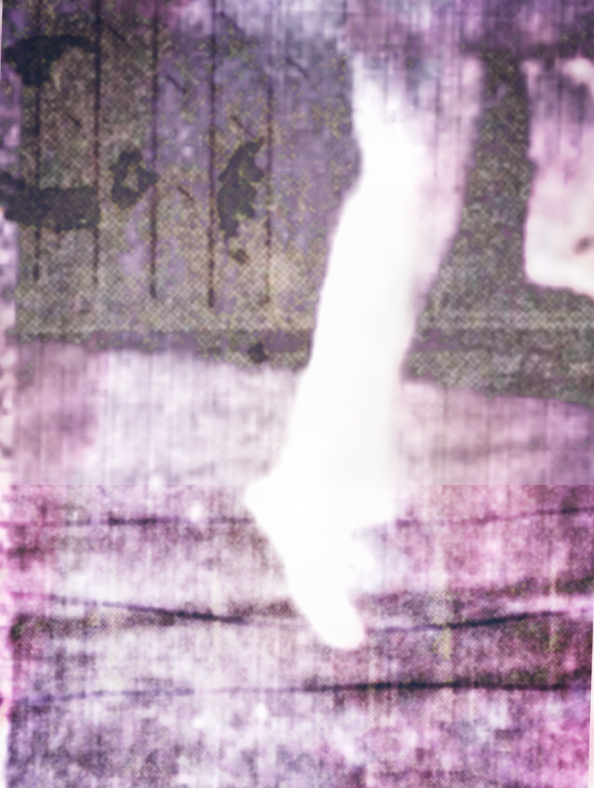

Οι 6daEXIt Improvisation Ensemble παρουσιάζουν 4 έργα σύγχρονης πειραματικής μουσικής. Τα έργα αυτά προέρχονται από κάλεσμα για έργα γραφικής και λεκτικής σημειογραφίας σε συγκεκριμένους συνθέτες απ’ όλον τον κόσμο και θα εκτελεστούν εδώ για δεύτερη φορά μετά από την παγκόσμια πρεμιέρα τους στη συναυλία των 6daEXIt στο ΚΕΤ (Αθήνα, 17-3-2026). 3 από αυτά μάλιστα γράφτηκαν ειδικά για τους 6daEXIt. Το σύνολο εστιάζει σε έργα ανοιχτής μορφής, τα οποία επαναπροσδιορίζουν τη σχέση συνθέτη, εκτελεστή και αποδέκτη. Η παρτιτούρα δεν είναι ένα τελικό διάγραμμα με προκαθορισμένες νότες, αλλά ένα σύνολο από κανόνες ή προθέσεις, στρατηγικές και ερεθίσματα που μπορούν να αντιστοιχηθούν σε δράσεις λιγότερο ή περισσότερο καθορισμένες. Τα έργα δημιουργούν έτσι το πλαίσιο δράσης και αντίληψης - ένα παράδειγμα είναι το κομμάτι -6-, το οποίο διαμορφώνεται ως επιτέλεση καθ' όλη τη διάρκεια της συναυλίας, δημιουργώντας ένα πλαίσιο που περιλαμβάνει μέσα του οτιδήποτε άλλο, χωρίς να το επικαλύπτει με ορατό τρόπο. Η τελική μορφή των έργων παραμένει ρευστή και δημιουργείται σε πραγματικό χρόνο από το σύνολο, καθιστώντας κάθε εκτέλεση μια μοναδική, μη επαναλήψιμη ηχητική εκδοχή, μέσα από την αλληλεπίδραση και την ακρόαση. Οι πρακτικές αυτές προσεγγίζουν τον κοινό τόπο ανάμεσα στην έννοια του έργου και του μερικώς ελεγχόμενου ελεύθερου - μη ιδιωματικού - αυτοσχεδιασμού.
* Έργο γραμμένο για τους 6daEXIt
** Η εκτέλεση λαμβάνει χώρα καθ' όλη τη διάρκεια της συναυλίας

6daEXIt — 2026Το σύνολο αυτοσχεδιασμού και πειραματικής μουσικής 6daEXIt Improvisation Ensemble δημιουργήθηκε στη Θεσσαλονίκη το 2007 μέσα από το μάθημα αυτοσχεδιασμού του Αλέξη Πορφυριάδη στο Τμήμα Μουσικών Σπουδών του ΑΠΘ (2005–09). Από το 2012 το σύνολο συνέχισε την πορεία του αυτόνομα, διατηρώντας ευέλικτη δομή με μεταβαλλόμενο αριθμό συντελεστών.
Οι 6daEXIt είναι μια ανοιχτή συλλογικότητα στην οποία μπορεί να λάβει μέρος ο καθένας μετά από τη σύμφωνη γνώμη των μελών της ομάδας. Έχουν παρουσιαστεί σε φεστιβάλ, στο Μέγαρο Μουσικής Θεσσαλονίκης, σε αυτοδιαχειριζόμενους χώρους και χώρους τεχνών σε όλη την Ελλάδα.